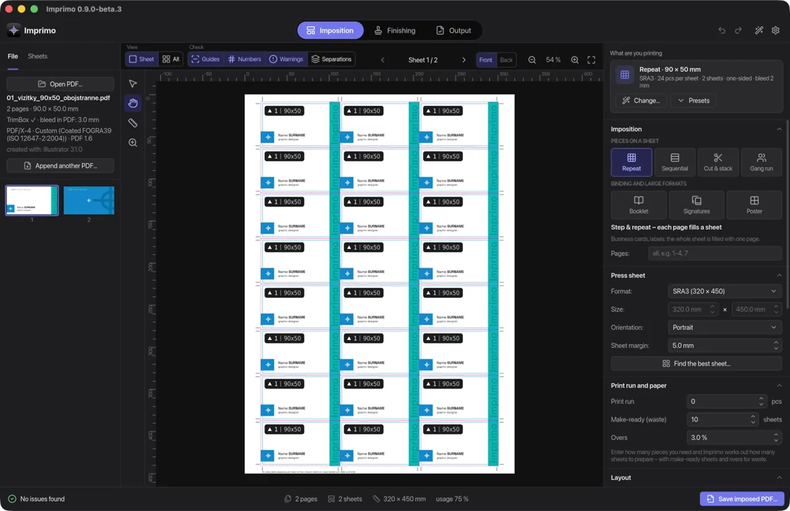
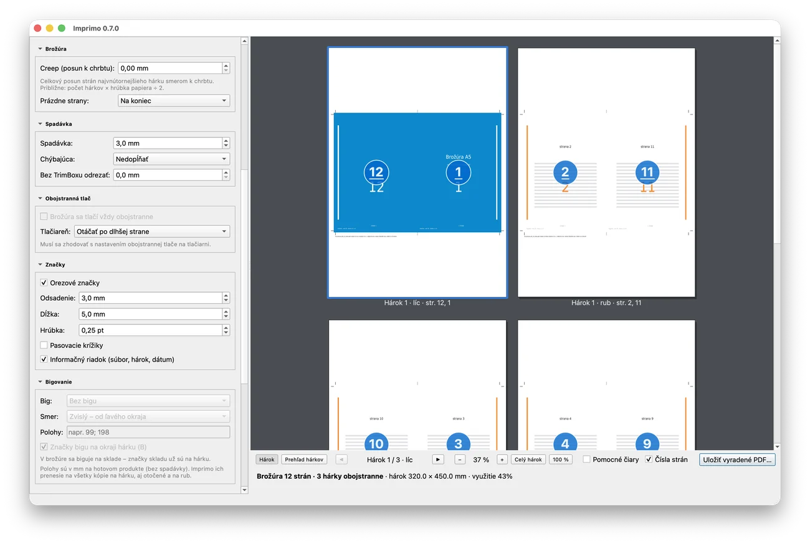
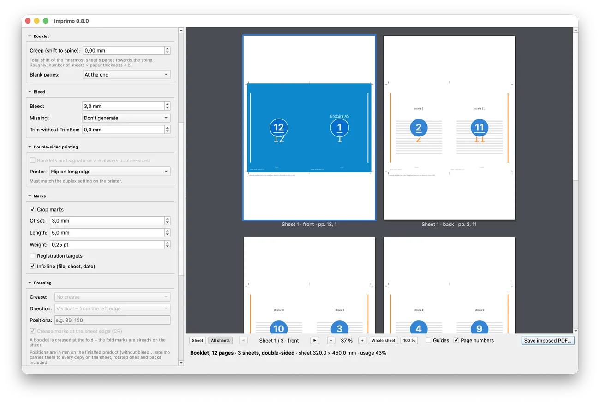
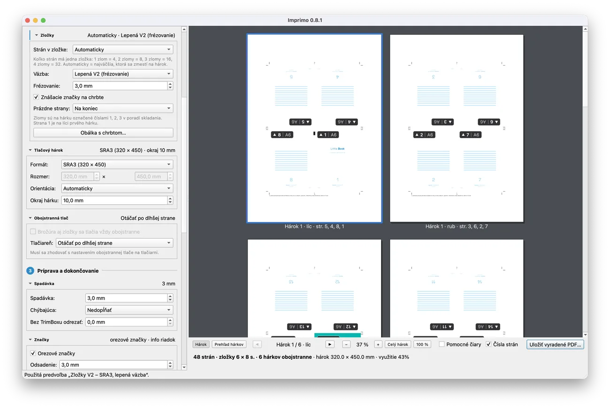
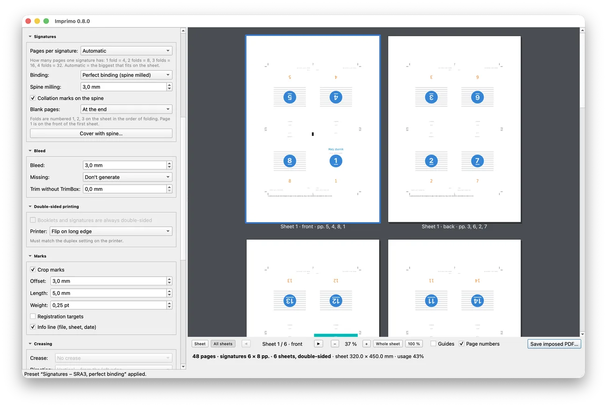
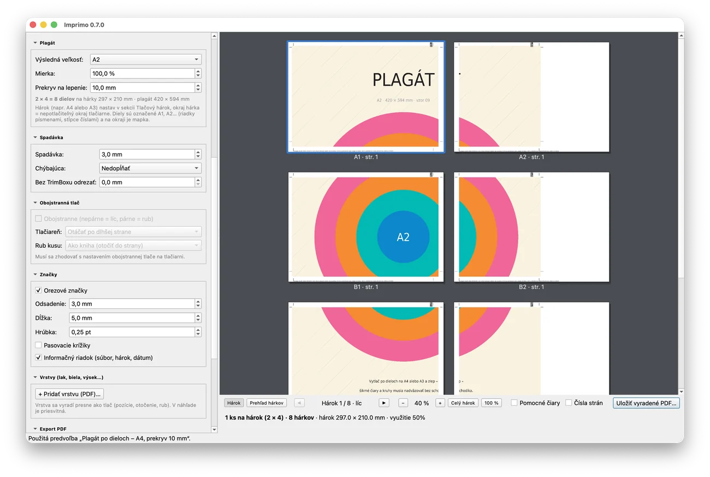
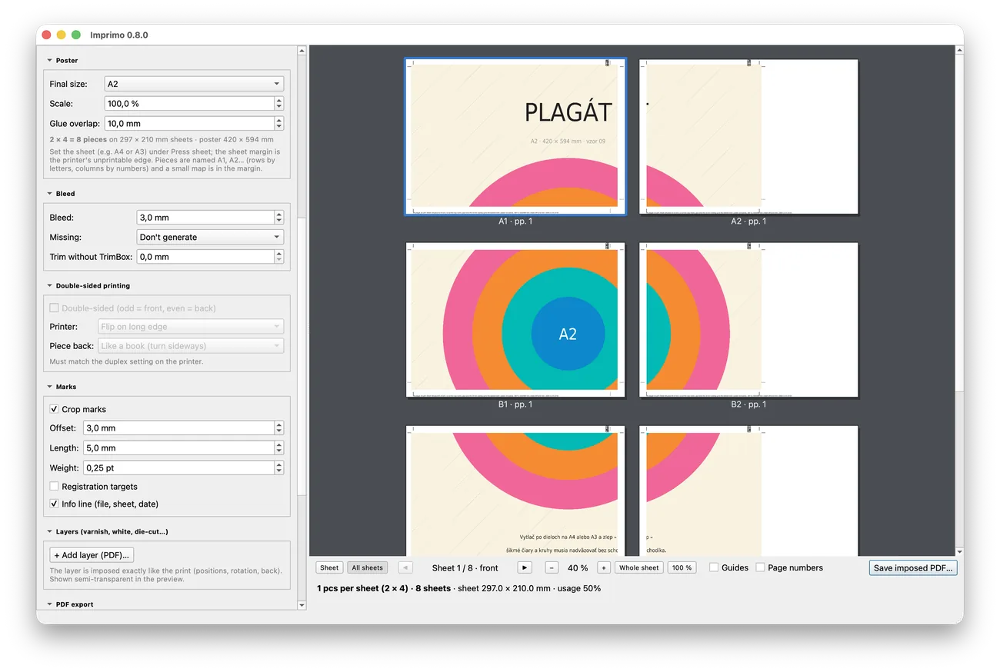
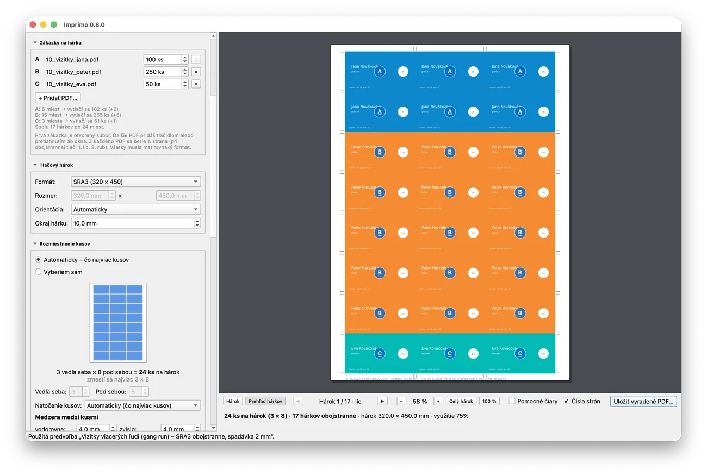
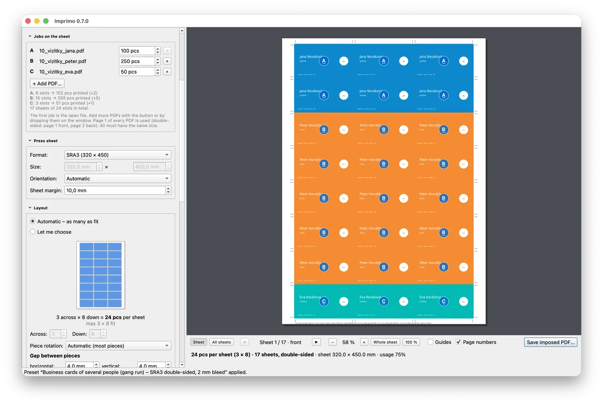

Vyraďovanie PDF pre tlač.PDF imposition for print.
Vizitky, brožúry, skladačky s bigom aj plagáty po dieloch – rýchlo, vektorovo a s kontrolou PDF/X. Zadarmo, bez inštalácie, pre školy aj tlačiarne.Business cards, booklets, creased leaflets and posters in pieces – fast, fully vector, with a PDF/X preflight. Free, nothing to install, for schools and print shops.
Rozbaľ a spusti – nič sa neinštaluje. Zdrojový kód a všetky verzie sú na GitHube.Unzip and run – nothing to install. Source code and all versions are on GitHub.
Nové Imprimo 0.9 – kontrola ako v tlačiarniThe new Imprimo 0.9 – checks like a print shop
Úplne nová aplikácia: jeden súbor, rýchlejší náhľad a nástroje, ktoré doteraz mali len drahé programy. Vyraďuje rovnako presne – PDF ostáva vektorové.A completely new app: a single program, a faster preview and tools that used to be in expensive software only. It imposes just as precisely – the PDF stays vector.
Separácie a nános farby ešte pred tlačouSeparations and ink coverage before printing
Súhrn pred uložením a výpočet nákladu s makulatúrouA summary before saving and the print run with waste
Nástroje Výber, Ruka, Meranie a LupaSelect, Hand, Measure and Zoom tools
Číslovanie vstupeniek klikom v náhľadeNumbered tickets placed with a click
Sledovaný priečinok, hromadné spracovanie a projektyHot folder, batch processing and projects
Beta je na skúšanie – pred tlačou celého nákladu vždy skontroluj skúšobný hárok. Chybu nahlásiš cez Pomocník → Nahlásiť problém alebo na GitHube.The beta is for trying out – always check a proof sheet before printing the full run. Report bugs via Help → Report a problem or on GitHub.
Verzia 0.8.1 ostáva k dispozícii na stiahnutie aj po vydaní 0.9.Version 0.8.1 stays available for download after 0.9 is out.

FunkcieFeatures
Od vizitky po plagát – všetko na jednom hárkuFrom a business card to a poster – all on one sheet
Strany sa vkladajú ako vektorové objekty: písma, CMYK, priame farby aj prechody ostanú presne také, aké boli. Nič sa nerastruje.Pages are placed as vector objects: fonts, CMYK, spot colors and gradients stay exactly as they were. Nothing is rasterized.
Brožúry so správnym poradím stránBooklets with the right page order
Imprimo zoradí strany tak, aby po zložení a zošití sedeli – 12 vedľa 1, na rube 2 vedľa 11. Posun (creep) vyrovná vytŕčajúce vnútorné hárky, PDF exportované po dvojstranách rozdelí samo.Imprimo orders the pages so they read correctly after folding and stitching – 12 next to 1, 2 next to 11 on the back. Creep compensates for the inner sheets, PDFs exported as spreads are split automatically.


Väzba V2 · 48 strán · 6 zložiek po 8Perfect binding · 48 pages · 6 × 8
Knihy a zborníky zo zložiekBooks made of signatures
Lepená väzba V2 alebo šitie niťou: Imprimo poskladá zložky po 4 až 32 stranách, pridá miesto na frézovanie, očíslované zlomy a znášacie značky na chrbte. Vzor na skladanie s veľkými číslami strán ukáže poradie ešte pred tlačou.Perfect binding or thread sewing: Imprimo builds signatures of 4 to 32 pages with room for spine milling, numbered folds and collation marks on the spine. A fold dummy with big page numbers shows the order before printing.
Obálka s chrbtom: hrúbku chrbta vypočíta z počtu strán a papiera, pripraví šablónu pre grafika a hotovú obálku otvorí s bigmi na chrbte.Cover with spine: the spine width from the page count and the paper, a template for the designer, and the finished cover opened with creases on the spine.


Big · 100 / 200 mm · značky BCrease · 100 / 200 mm · crease marks
Bigovanie bez počítaniaCreasing without the maths
Pozvánka na polovicu, Z skladačka alebo zavinovacia DL so 100 / 100 / 97 mm – alebo bigy načítané z PDF vo farbe Crease. Imprimo ich prenesie na každú kópiu na hárku a na okraj dá značky pre ručnú bigovačku.An invitation folded in half, a Z-fold or a DL roll fold with 100 / 100 / 97 mm panels – or creases read from a PDF in the Crease color. Imprimo carries them to every copy and puts marks for a manual creaser at the sheet edge.
Plagát z kancelárskej tlačiarneA poster from an office printer
Veľká strana sa rozdelí na diely A4 alebo A3 s prekryvom na lepenie. Diely A1, A2, B1… majú orezové rysky, značky na lepenie a malú mapku. Výslednú veľkosť A3 až A0 zvolíš jedným klikom.A big page is split into A4 or A3 pieces with a glue overlap. Pieces A1, A2, B1… carry crop marks, glue marks and a small map. Pick the final size, A3 to A0, in one click.


A 100 ks · B 250 ks · C 50 ks → 17 hárkovA 100 · B 250 · C 50 pcs → 17 sheets
Viac zákaziek na jednom hárkuSeveral jobs on one sheet
Vizitky troch ľudí, každá v inom počte – Imprimo rozdelí miesta na hárku tak, aby bolo čo najmenej hárkov, a ukáže, kde je ktorá zákazka.Business cards of three people, each in a different quantity – Imprimo splits the slots so the fewest sheets are needed and shows which job is where.


Predvoľby zákaziekJob presets
Vizitky, pozvánka, DL, brožúra, vstupenky, plagát – jedným klikom. Vlastné predvoľby uložíš a pošleš celej triede.Business cards, invitation, DL, booklet, tickets, poster – one click. Save your own and share them with a whole class.
Cut & stackCut & stack
Číslované vstupenky a poukážky – po rezaní a stohovaní idú čísla po poradí.Numbered tickets and vouchers – after cutting and stacking the numbers run in order.
SpadávkaBleed
Chýbajúcu spadávku Imprimo doplní zrkadlením alebo natiahnutím okraja.Missing bleed is generated by mirroring or stretching the page edge.
Vrstvy sa vyradia presne ako tlač a uložia zvlášť alebo ako vrstvy PDF.Layers are imposed exactly like the print and saved separately or as PDF layers.
Spotové farbySpot colors
Paleta Crease, CutContour, Varnish… ako .ase pre Illustrator, InDesign a Affinity.Crease, CutContour, Varnish… as an .ase palette for Illustrator, InDesign and Affinity.
PDF/X a preflightPDF/X and preflight
Export PDF/X-1a, X-3, X-4 s výstupným profilom; kontrola písma, RGB, rozlíšenia a spadávky.PDF/X-1a, X-3, X-4 export with an output intent; checks of fonts, RGB, resolution and bleed.
Pre kohoWho it's for
Navrhnuté v triede, overené v praxiDesigned in a classroom, tested on the press
11 lekcií so vzorovými PDF11 lessons with sample PDFs
V Imprime cez Pomocník → Vzorové súbory. Lekcia sa otvorí aj s predvoľbou, k nej je postup a úloha pre študentov. Predvoľby pre celú triedu pripravíš raz a pošleš ako súbor.In Imprimo via Help → Sample files. A lesson opens with its preset, plus steps and an exercise. Prepare presets for the whole class once and share them as a file.
Slobodný softvér, žiadne licencie na strojFree software, no per-seat licenses
Vizitky, letáky, brožúry a plagáty na digitálnej tlači – bez predplatného a bez inštalácie na každý počítač.Business cards, leaflets, booklets and posters on a digital press – no subscription, nothing to install on every computer.
Šetrí vám Imprimo čas? Vývoj môžete podporiť dobrovoľným príspevkom.Does Imprimo save you time? You can support its development with a voluntary donation. ♥ Podporiť na Ko-fi →♥ Support on Ko-fi →
Zadarmo aj na komerčnú tlač – licencia GNU GPL v3.0.Free for commercial print work too – GNU GPL v3.0.
Gang run: viac zákaziek na jednom hárku.Gang run: several jobs on one sheet.
Vlastné predvoľby pre opakované zákazky.Your own presets for repeat jobs.
Príkazový riadok na automatizáciu.Command line for automation.
Komerčná licencia pre uzavreté produkty na požiadanie.A commercial license for closed-source products on request.
Priprav PDF tak, aby ho tlačiareň vytlačila bez otázokPrepare a PDF the printer prints without questions
Imprimo nemení obsah strán – žiadne rastrovanie ani prevod farieb. Preflight ti ešte pred tlačou povie, čo v PDF chýba.Imprimo never changes page content – no rasterizing, no color conversion. The preflight tells you what's missing before anything is printed.
Paleta Crease, CutContour, Varnish… pre Illustrator, InDesign a Affinity.Crease, CutContour, Varnish… palette for Illustrator, InDesign and Affinity.
Big nakreslíš v Affinity, Imprimo ho prenesie na hárok.Draw a crease in Affinity, Imprimo carries it to the sheet.
Lak, biela, výsek a fólia ako samostatné vrstvy.Varnish, white, die-cut and foil as separate layers.
Kontrola písiem, RGB, rozlíšenia a spadávky.Checks of fonts, RGB, resolution and bleed.
Export PDF/X-1a, X-3 a X-4.PDF/X-1a, X-3 and X-4 export.
Slovníček tlačePrint glossary
Čo je bigovanie, spadávka či creep?What are creasing, bleed and creep?
Pojmy, na ktoré narazíš pri príprave tlače a v Imprime – stručne, pre začiatočníkov aj študentov.Terms you meet in print production and in Imprimo – in short, for beginners and students.
VyraďovanieImposition
Rozloženie strán na tlačový hárok tak, aby po tlači, rezaní a skladaní vznikol hotový produkt so stranami v správnom poradí. Na jednom hárku SRA3 je napríklad 24 vizitiek alebo 8 strán brožúry A5.Arranging pages on a press sheet so that printing, cutting and folding give a finished product with the pages in the right order. One SRA3 sheet holds e.g. 24 business cards or 8 pages of an A5 booklet.
Opakovanie (step & repeat)Step & repeat
Jedna strana sa zopakuje na celom hárku – vizitky, etikety, pozvánky. Pri obojstrannej tlači musí byť rub uložený tak, aby po otočení hárku (po dlhšej alebo kratšej strane) sedel presne na líce.One page repeated across the whole sheet – business cards, labels, invitations. For double-sided printing the back is laid out so that it lines up with the front after the sheet is turned (on the long or the short edge).
SpadávkaBleed
Grafika, ktorá siaha až po okraj, musí pokračovať 3 mm za čistý formát – ak s tlačiarňou nie je dohodnuté inak. Rez nikdy nie je úplne presný a bez spadávky by na okraji ostal tenký biely prúžok papiera.Artwork that runs to the edge has to continue 3 mm past the trim size – unless agreed otherwise with the print shop. No cut is perfectly accurate, and without bleed a thin white line of paper would show at the edge.
Čistý formát a orezové značkyTrim size and crop marks
Čistý formát je konečná veľkosť produktu po orezaní, v PDF je zapísaný ako TrimBox. Orezové značky sú tenké čiary mimo produktu, podľa ktorých sa reže – sú odsadené, aby nezasahovali do spadávky.The trim size is the final size of the product after cutting; a PDF stores it as the TrimBox. Crop marks are thin lines outside the product that show where to cut – offset so they stay clear of the bleed.
Pasovacie krížikyRegistration marks
Terčíky tlačené vo všetkých farbách naraz. Ak sú farby CMYK presne na sebe (v sútlači), krížik je čierny a ostrý; ak nie, vidno farebné okraje.Targets printed in all colors at once. When the CMYK colors are exactly on top of each other (in register) the target is black and sharp; when they are not, colored fringes show.
BigovanieCreasing
Vytlačenie drážky (bigu) do papiera v mieste ohybu. Hrubší papier – zhruba od 170 g/m² – sa bez bigu pri skladaní láme a farba na prehybe praská. Big sa robí pred skladaním (falcovaním).Pressing a groove (crease) into the paper where it will fold. Heavier stock – from roughly 170 g/m² – cracks along the fold without one, and the ink on the fold breaks. Creasing comes before folding.
Hárky sa vložia do seba, zložia v polovici a zošijú drôtom cez chrbát. Počet strán musí byť deliteľný štyrmi; na jednom hárku sú vedľa seba napríklad strany 12 a 1, na rube 2 a 11.Sheets are nested, folded in half and stapled through the spine. The page count must be a multiple of four; one sheet carries e.g. pages 12 and 1 side by side, and 2 and 11 on the back.
Pri hrubšej šitej brožúre vnútorné hárky po zložení vytŕčajú, a po orezaní sú ich strany užšie. Posun k chrbtu to vyrovná – približne počet hárkov × hrúbka papiera ÷ 2.In a thicker saddle-stitched booklet the inner sheets stick out after folding, so their pages end up narrower after trimming. Shifting them towards the spine compensates – roughly number of sheets × paper thickness ÷ 2.
Zložka a väzba V2Signatures and perfect binding
Zložka je hárok zložený na 4, 8, 16 alebo 32 strán. Pri knihe sa zložky znesú na seba a zlepia (V2) alebo zošijú niťou. Šikmé značky na chrbte ukážu, či sú zložky v správnom poradí.A signature is a sheet folded into 4, 8, 16 or 32 pages. For a book the signatures are gathered and glued (perfect binding) or sewn. Stepped marks on the spine show whether the signatures are in the right order.
Viac rôznych zákaziek rovnakého formátu na jednom hárku – napríklad vizitky troch ľudí. Počet miest na hárku sa rozdelí podľa nákladu, takže sa netlačí zbytočne.Several different jobs of the same size on one sheet – e.g. business cards for three people. The slots are shared out by quantity, so nothing is printed in vain.
Rozloženie pre číslované vstupenky a poukážky: celý stoh hárkov sa prereže naraz, kôpky sa položia na seba a čísla idú po poradí od 1 do konca.A layout for numbered tickets and vouchers: the whole pile of sheets is cut at once, the stacks are put on top of each other and the numbers run in order from first to last.
PDF/X a výstupný profilPDF/X and output intent
PDF/X je norma pre tlačové PDF: písma vložené, žiadne RGB bez profilu. X-1a je čisté CMYK, X-4 dovolí priehľadnosť a vrstvy. Výstupný profil (napr. Coated FOGRA39) hovorí, pre akú tlač bol súbor pripravený.PDF/X is the standard for print PDFs: fonts embedded, no untagged RGB. X-1a is plain CMYK, X-4 allows transparency and layers. The output intent (e.g. Coated FOGRA39) says which printing condition the file was made for.
Ďalšie vrstvy nad tlačou alebo pod ňou: parciálny lak, podtlač bielou na fóliu či farebný papier, kontúra pre výsek alebo plotter a razba fóliou. Pripravujú sa ako samostatné PDF alebo priame farby a musia sedieť presne na tlač.Extra layers above or under the print: spot varnish, white underprint on film or colored stock, a contour for die-cutting or a plotter, and foil. They come as separate PDFs or spot colors and must line up exactly with the print.
SRA3SRA3
Hárok 320 × 450 mm, o kúsok väčší než A3 (297 × 420 mm), aby sa na neho vošla A3 aj so spadávkou a značkami. Je to typický hárok digitálnych tlačových strojov.A 320 × 450 mm sheet, slightly larger than A3 (297 × 420 mm), so that an A3 page fits with its bleed and marks. It is the usual sheet size of digital presses.